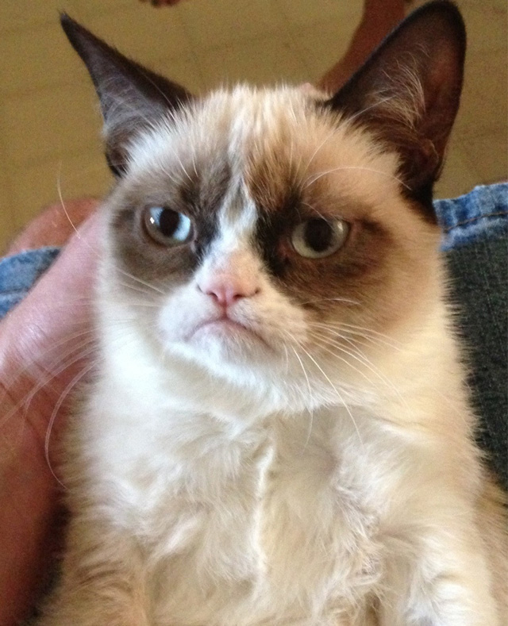

Grumpy Cat (real name: Tardar Sauce), was also known for her unique physical appearance. Due to birth “defects”, such as an underbite and feline dwarfism, she was famous for her constantly "grumpy" expression.

Tardar Sauce was born in Arizona, on April 4, 2012. She was named after a popular condiment, made out of mayonnaise and pickles. In 2012, her photos were posted to Reddit and she gained an instant following due to her unique looks.
Her YouTube channel is extremely succesful, with 40.1 million total page views. Grumpy Cat has appeared in Friskies' cat food commercials, and "wrote" her own book in July of 2013, titled "Grumpy Cat: A Grumpy Book".
The celebrity’s owners soon caught on and made merchandise of Grumpy’s irresistible face. From cups and clothing to shoes and stuffed toys, there’s pretty much any product that will satisfy a cat lover.
Grumpy's networth is thought to be around 64 million pounds, according to "The Sun". After living a long, happy life of seven years, Tardar Sauce passed away on May 14, 2019.
Tardar Sauce was missed greatly by her owners, and this statement was released: "Besides being our baby and a cherished member of the family, Grumpy Cat has helped millions of people smile all around the world — even when times were tough,"
Return to the top of the page.